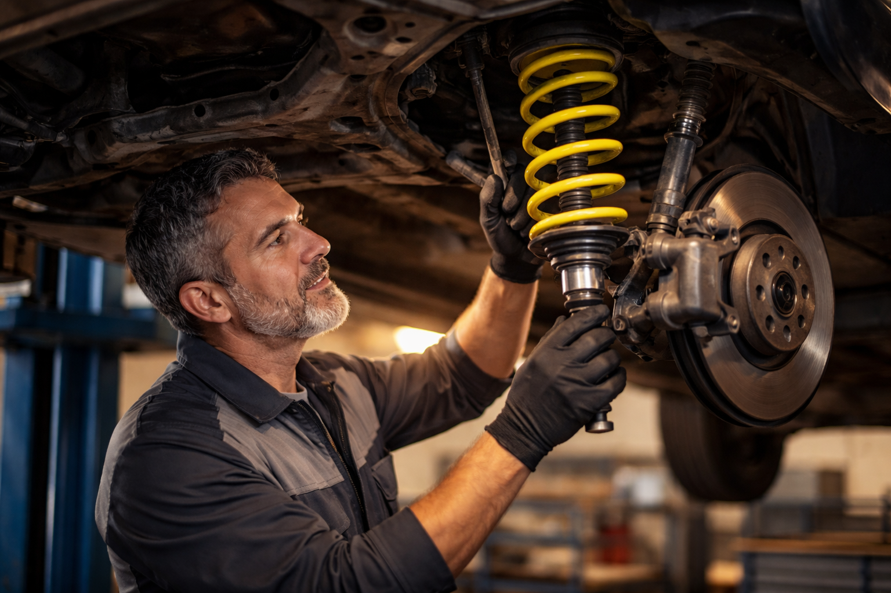
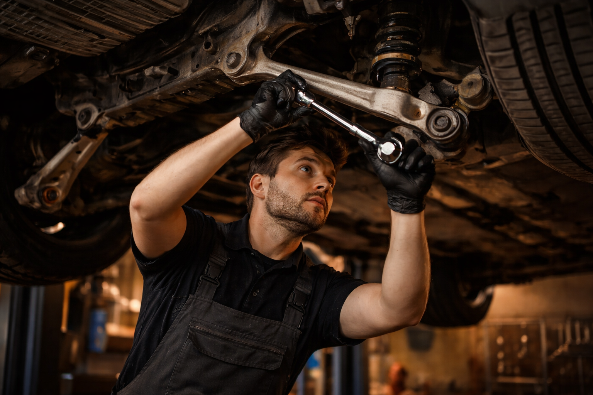

Réparation et remplacement de pièces de direction et suspension pour une tenue de route impeccable. Ali-Ka, 22 ans d'expertise à Etterbeek.

Les pavés de la rue Gray, les nids-de-poule de l'Avenue de Tervueren après l'hiver, le dos-d'âne mal signalé rue des Tongres. Vos amortisseurs encaissent tout ça, jour après jour. Et un matin, le volant tire à gauche. Ou un claquement sourd remonte dans l'habitacle à chaque passage de plaque d'égout.
On voit ça tous les jours chez Ali-Ka, Avenue des Casernes 10 à Etterbeek. Les rues bruxelloises détruisent les suspensions bien plus vite que n'importe quelle autoroute. Rotules fissurées, biellettes tordues, silent blocs écrasés — ces pièces souffrent à chaque virage serré autour du Cinquantenaire, à chaque pavé disjoint vers la place Jourdan. Depuis plus de 22 ans, notre équipe diagnostique et répare tous les éléments du train roulant des automobilistes d'Etterbeek, d'Ixelles, de Woluwe-Saint-Lambert et des communes voisines. On connaît chaque route, chaque piège, chaque revêtement cassé du quartier.
Ce n'est pas qu'une question de confort. Pas du tout.
Quand un amortisseur est mort, votre roue rebondit au lieu de coller à la route. Résultat concret : la distance de freinage s'allonge, parfois de plusieurs mètres. Sur les pavés mouillés de l'Avenue de Tervueren un soir de novembre, ces mètres-là comptent. Les pneus s'usent de travers — l'intérieur fond pendant que l'extérieur reste neuf. La voiture flotte dans les virages. Elle tangue au freinage. Rouler dans les rues résidentielles d'Etterbeek ou autour du Cinquantenaire avec une suspension fatiguée, c'est compromettre directement votre sécurité et celle des autres.
Notre recommandation : faites contrôler la suspension tous les 60 000 à 80 000 km. Mais n'attendez pas ce kilométrage si les symptômes sont là — rebonds excessifs sur les bosses, claquements secs sur les plaques d'égout, volant qui tire à droite sans raison. Après chaque intervention sur la direction ou la suspension, un contrôle complet du train roulant est systématique chez Ali-Ka. Et pour un bilan vraiment complet, on associe le contrôle de suspension à une vérification des freins et un diagnostic moteur.
Un chiffre qui parle : plus de 15 % des refus au contrôle technique en Belgique sont liés à des défauts de direction et de suspension. Ajoutez les problèmes d'échappement — l'autre grand motif de refus — et vous comprenez l'intérêt d'un contrôle complet chez Ali-Ka.
Rebond excessif sur les bosses, distance de freinage allongée, usure irrégulière des pneus et tenue de route dégradée. Les pavés et nids-de-poule bruxellois accélèrent cette usure. Venez chez Ali-Ka à Etterbeek pour un contrôle.
Le coût dépend du véhicule et du type d'amortisseurs. Ali-Ka propose des devis transparents. Appelez le 02 647 47 01 pour un devis personnalisé.
Les vibrations dans la direction peuvent venir d'un déséquilibrage de pneus, de rotules usées ou de biellettes endommagées. Un diagnostic chez Ali-Ka permet d'identifier la cause rapidement.
Oui, toujours par paire (avant ou arrière) pour un comportement routier équilibré et une usure homogène des pneus.
Oui, les nids-de-poule et les pavés bruxellois sollicitent fortement les amortisseurs, rotules et silent-blocs. Un choc important peut également endommager des pièces du train roulant. Ali-Ka à Etterbeek vérifie l'état de votre suspension et effectue les réparations nécessaires.